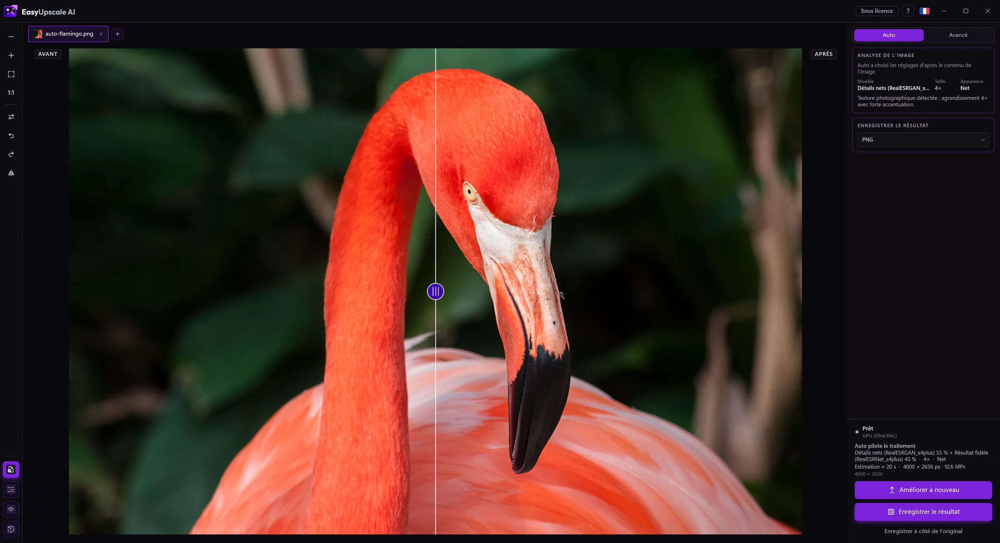

Besoin d'une image plus nette ?
Une photo floue ou molle peut souvent être améliorée. EasyUpscale AI l'agrandit et l'affine grâce à une IA qui tourne sur votre propre PC. Rien n'est envoyé en ligne.

Télécharger gratuitement pour Windows · Acheter une licence · 14,99 €
Comment faire
- Ouvrez l'image dans EasyUpscale AI.
- Cliquez sur Améliorer l'image. Le mode Auto reconnaît s'il s'agit d'une photo, d'un dessin, d'un texte ou d'une prise de vue abîmée, et choisit un modèle adapté.
- Vérifiez le résultat avec le curseur avant/après et enregistrez-le en PNG ou JPEG.
À quoi s'attendre
- L'agrandissement 2× est gratuit, sans filigrane. Une licence unique de 14,99 € (sans abonnement) ajoute le 4×, le mode Avancé, les lots et d'autres formats.
- L'IA peut ajouter des détails fins plausibles, mais elle ne peut pas retrouver ce qui n'est pas dans la photo. Une image très floue ou bougée s'améliore, mais n'attendez pas de miracles.
- Après le traitement, vous pouvez régler la netteté et le lissage du bruit pour que le résultat ne paraisse pas retravaillé.
Pourquoi hors ligne
- Vos photos ne quittent jamais votre ordinateur.
- Pas de crédits par image, pas de file d'attente.
- Fonctionne sur les cartes graphiques NVIDIA, AMD et Intel (DirectX 12).